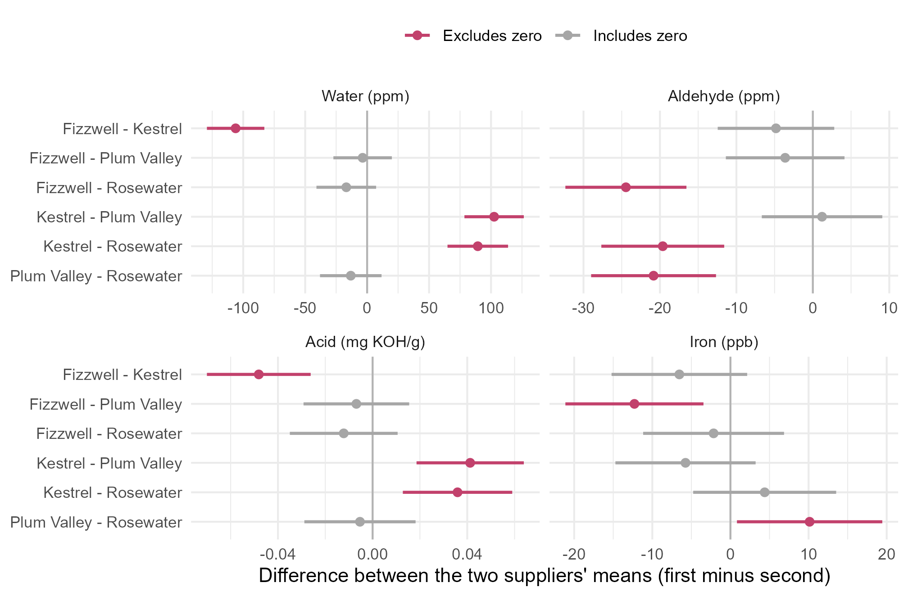

Module 3 · Lesson 7 of 13 Week 53 of 160 About 5–7 hours
Linear contrasts and simultaneous inference
After a significant MANOVA: which groups differ, and on what?
Follow up a MANOVA with planned multivariate contrasts tested by Hotelling’s T² and car::linearHypothesis(), build Bonferroni and simultaneous intervals for contrasts and pairwise comparisons, and use a covariate-adjusted follow-up to ask whether one difference is explained by another.
The MANOVA said the four suppliers’ lots differ, with a p-value too small to print sensibly. That’s not much use to the purchasing department on its own. They have specific questions. Is Kestrel different from everyone else, and in what? Is Rosewater? And what about the twins, Fizzwell and Plum Valley? This lesson answers questions like these with contrasts, the planned comparisons of Lesson 2.13, now with mean vectors, and with intervals that stay honest when you look at many comparisons at once.
The MANOVA rang the bell. Now we find out who was at the door, and what they were carrying!
In this lesson you’ll:
- write a planned comparison as a contrast of mean vectors, and test it with T^2
- test contrasts with
car::linearHypothesis() - build simultaneous intervals to see which properties drive a contrast
- compare all pairs of groups with Bonferroni intervals
- ask whether one difference is explained by another, with a covariate-adjusted follow-up
Contrasts of mean vectors
A contrast is a weighted combination of the group means, with weights that add up to zero (Lesson 2.13). With mean vectors, it’s a vector:
\boldsymbol\psi = c_1\boldsymbol\mu_1 + c_2\boldsymbol\mu_2 + \dots + c_k\boldsymbol\mu_k, \qquad \sum_i c_i = 0 .
The suppliers are in alphabetical order: Fizzwell, Kestrel, Plum Valley, Rosewater. So “Kestrel against the average of the other three” has weights \mathbf{c} = (-\tfrac13, 1, -\tfrac13, -\tfrac13), and “Fizzwell against Plum Valley” has (1, 0, -1, 0).
The contrast is estimated by the same combination of the sample mean vectors, \hat{\boldsymbol\psi} = \sum c_i\bar{\mathbf{x}}_i. Because the groups are independent, its covariance matrix is \left(\sum c_i^2/n_i\right)\Sigma, and \Sigma is estimated by the pooled within-group covariance matrix of all the groups, S_p = E/(N - k). To test H_0: \boldsymbol\psi = \mathbf{0}, use a T^2 statistic:
T^2 = \hat{\boldsymbol\psi}^\top \left[ \Big(\sum_i \frac{c_i^2}{n_i}\Big) S_p \right]^{-1} \hat{\boldsymbol\psi}, \qquad \frac{N - k - p + 1}{p\,(N - k)}\,T^2 \sim F_{p,\ N - k - p + 1} .
With 58 lots, 4 suppliers and 4 properties, that’s an F distribution with 4 and 51 degrees of freedom.
Your turn. The setup code has made means, a matrix with one row of means per supplier, and n_i, the group sizes. Estimate the contrast “Kestrel against the other three”.
Rosewater, the fourth supplier, gets the same weight as the other two: -1/3.
cc <- c(-1/3, 1, -1/3, -1/3)
colSums(cc * means)Compared with the average of the other three, Kestrel’s lots carry 99 ppm more water, 4.5 ppm less aldehyde, 0.042 mg KOH/g more acid and 1.7 ppb more iron. (cc * means multiplies each row of means by its supplier’s weight, and colSums() adds them up.)
Your turn. Test the Kestrel contrast with T^2.
The covariance of the contrast is \left(\sum c_i^2/n_i\right) S_p.
cc <- c(-1/3, 1, -1/3, -1/3)
psi <- colSums(cc * means)
T2 <- t(psi) %*% solve(sum(cc^2 / n_i) * Sp) %*% psi
F_stat <- (N - k - p + 1) / (p * (N - k)) * T2
c(F = F_stat, p = pf(F_stat, p, N - k - p + 1, lower.tail = FALSE))F = 69.7 on 4 and 51 degrees of freedom, p = 5 \times 10^{-20}. No doubt at all: Kestrel’s lots are different.
Contrasts with car::linearHypothesis()
The car package tests contrasts directly on a multivariate linear model. Fit the model with one coefficient per group (the “cell means” model, with 0 + to drop the intercept), and give linearHypothesis() the contrast weights as a hypothesis matrix, one row per contrast:
mlm <- lm(cbind(water_ppm, aldehyde_ppm, acid_mgKOH, iron_ppb) ~ 0 + supplier, data = feed)
car::linearHypothesis(mlm, hypothesis.matrix = rbind(c(-1/3, 1, -1/3, -1/3)))
#>
#> Sum of squares and products for the hypothesis:
#> water_ppm aldehyde_ppm acid_mgKOH iron_ppb
#> water_ppm 109469.94968 -4998.82908 46.01704939 1899.6022915
#> aldehyde_ppm -4998.82908 228.26623 -2.10131973 -86.7433227
#> acid_mgKOH 46.01705 -2.10132 0.01934384 0.7985214
#> iron_ppb 1899.60229 -86.74332 0.79852135 32.9632824
#>
#> Sum of squares and products for error:
#> water_ppm aldehyde_ppm acid_mgKOH iron_ppb
#> water_ppm 21466.0192 616.557692 11.37120192 -721.476923
#> aldehyde_ppm 616.5577 2321.584696 1.26538196 -310.138674
#> acid_mgKOH 11.3712 1.265382 0.01921501 -1.584202
#> iron_ppb -721.4769 -310.138674 -1.58420174 3009.947168
#>
#> Multivariate Tests:
#> Df test stat approx F num Df den Df Pr(>F)
#> Pillai 1 0.845267 69.65012 4 51 < 2.22e-16 ***
#> Wilks 1 0.154733 69.65012 4 51 < 2.22e-16 ***
#> Hotelling-Lawley 1 5.462755 69.65012 4 51 < 2.22e-16 ***
#> Roy 1 5.462755 69.65012 4 51 < 2.22e-16 ***
#> ---
#> Signif. codes: 0 '***' 0.001 '**' 0.01 '*' 0.05 '.' 0.1 ' ' 1It prints the contrast’s SSCP matrix, the error matrix E, and all four MANOVA statistics. For a single contrast, they all give the same F-test as the T^2, F = 69.7, because a one-row contrast has only one non-zero eigenvalue. A hypothesis matrix with several rows tests several contrasts jointly, with \min(p, \text{rows}) eigenvalues, and then the four statistics differ again.
NoteGo deeper: orthogonal contrasts split H
With k groups, you can find k - 1 contrasts that together carry all of the between-group information, so that their SSCP matrices add up to H exactly, like the sums of squares of orthogonal contrasts in ANOVA. Each contrast’s SSCP matrix is \hat{\boldsymbol\psi}\hat{\boldsymbol\psi}^\top / \sum (c_i^2/n_i).
The condition for two contrasts \mathbf{c} and \mathbf{d} to be orthogonal is \sum c_i d_i/n_i = 0. With equal group sizes, that’s the familiar \sum c_i d_i = 0. With unequal sizes, as here (16, 15, 14 and 13 lots), “Kestrel against the rest” and “Rosewater against Fizzwell and Plum Valley” aren’t quite orthogonal, so their SSCP matrices overlap a little, and don’t add up to H. That’s harmless for testing each one. It matters only if you want a neat decomposition of H. Then weight the averages by the group sizes: for example, Kestrel against the pooled mean of the other 43 lots is \mathbf{c} = (-\tfrac{16}{43}, 1, -\tfrac{14}{43}, -\tfrac{13}{43}). Practice item 3 at the end builds a full orthogonal set.
Your turn. Test “Fizzwell against Plum Valley” with linearHypothesis().
Plum Valley, the third supplier, gets the weight -1.
mlm <- lm(cbind(water_ppm, aldehyde_ppm, acid_mgKOH, iron_ppb) ~ 0 + supplier, data = feed)
test <- car::linearHypothesis(mlm, hypothesis.matrix = rbind(c(1, 0, -1, 0)))
testF = 6.42 on 4 and 51 degrees of freedom, p = 0.0003. Lesson 5’s two-sample test of the same pair gave p = 0.0028. Why the difference? This test estimates the covariance matrix from all four suppliers’ lots, so it has 54 error degrees of freedom instead of 28, which sharpens the test. That’s one of the advantages of following up a MANOVA instead of running separate two-group tests, as long as the groups share a covariance matrix. Here they don’t quite: Kestrel’s water varies about twice as much as the others’ (Box’s M flagged it in Lesson 6), and pooling it in inflates the water variance. A careful analyst checks that this doesn’t drive the conclusion. Pooling only the other three suppliers gives p = 0.001, so it doesn’t.
Which properties drive a contrast?
A significant contrast says the two sides differ somewhere in their four properties. To see where, build an interval for the contrast on each property. For property j,
\hat\psi_j \pm m \sqrt{\Big(\sum_i \frac{c_i^2}{n_i}\Big)\, s_{p,jj}} ,
where s_{p,jj} is the pooled variance of property j, and the multiplier m depends on how many intervals you look at:
- Bonferroni, for a planned set of r intervals: m = t_{N-k}(\alpha/2r). For one contrast on four properties, r = 4.
- Simultaneous T^2-type intervals, for every contrast on every combination of properties you might want, even after looking at the data: m = \sqrt{\frac{p(N-k)}{N-k-p+1}F_{p,\,N-k-p+1}(\alpha)}, like Lesson 4’s. They’re wider, the price of complete freedom.
Here, the Bonferroni multiplier for four intervals is t_{54}(0.05/8) = 2.58, and the T^2-type multiplier is 3.29.
Your turn. Compute the Bonferroni intervals for the Kestrel contrast on all four properties.
There are four intervals, one per property: r = 4.
cc <- c(-1/3, 1, -1/3, -1/3)
psi <- colSums(cc * means)
se <- sqrt(sum(cc^2 / n_i) * diag(Sp))
m <- qt(1 - 0.05 / (2 * 4), df = N - k)
cbind(estimate = psi, lower = psi - m * se, upper = psi + m * se)The water’s interval runs from about 84 to 115 ppm, and the acid’s from 0.027 to 0.056: both far from zero. The aldehyde’s and the iron’s intervals both include zero. Kestrel’s lots are wetter and more acidic than the others, and that’s all.
All pairs of groups
When there’s no specific plan, the usual follow-up is to compare every pair of groups on every property. Here, that’s \binom{4}{2} = 6 pairs times 4 properties: r = 24 intervals, so the Bonferroni multiplier is t_{54}(0.05/48) = 3.23. Here are the intervals that exclude zero:
levs <- levels(supplier)
means <- t(sapply(levs, function(s) colMeans(X[supplier == s, , drop = FALSE])))
n_i <- as.numeric(table(supplier))
E <- Reduce(`+`, lapply(levs, function(s) {
Xs <- X[supplier == s, , drop = FALSE]
crossprod(sweep(Xs, 2, colMeans(Xs)))
}))
Sp <- E / (nrow(X) - 4)
m <- qt(1 - 0.05 / (2 * 24), df = nrow(X) - 4)
pairs_list <- combn(4, 2)
intervals <- bind_rows(lapply(seq_len(ncol(pairs_list)), function(j) {
a <- pairs_list[1, j]; b <- pairs_list[2, j]
d <- means[a, ] - means[b, ]
se <- sqrt(diag(Sp) * (1 / n_i[a] + 1 / n_i[b]))
tibble(pair = paste(levs[a], "-", levs[b]), property = vars, difference = d, lower = d - m * se, upper = d + m * se)
}))
filter(intervals, lower > 0 | upper < 0)
#> # A tibble: 11 × 5
#> pair property difference lower upper
#> <chr> <chr> <dbl> <dbl> <dbl>
#> 1 Fizzwell - Kestrel water_ppm -106. -129. -82.9
#> 2 Fizzwell - Kestrel acid_mgKOH -0.0481 -0.0700 -0.0262
#> 3 Fizzwell - Plum Valley iron_ppb -12.3 -21.1 -3.45
#> 4 Fizzwell - Rosewater aldehyde_ppm -24.5 -32.4 -16.5
#> 5 Kestrel - Plum Valley water_ppm 102. 78.5 126.
#> 6 Kestrel - Plum Valley acid_mgKOH 0.0412 0.0186 0.0639
#> 7 Kestrel - Rosewater water_ppm 89.3 64.9 114.
#> 8 Kestrel - Rosewater aldehyde_ppm -19.6 -27.7 -11.6
#> 9 Kestrel - Rosewater acid_mgKOH 0.0359 0.0128 0.0590
#> 10 Plum Valley - Rosewater aldehyde_ppm -20.8 -29.0 -12.7
#> 11 Plum Valley - Rosewater iron_ppb 10.1 0.833 19.4And here are all 24, one panel per property:
intervals |>
mutate(property = factor(property, levels = vars, labels = c("Water (ppm)", "Aldehyde (ppm)", "Acid (mg KOH/g)", "Iron (ppb)")),
pair = factor(pair, levels = rev(unique(pair))),
excludes_zero = ifelse(lower > 0 | upper < 0, "Excludes zero", "Includes zero")) |>
ggplot(aes(x = difference, y = pair, xmin = lower, xmax = upper, color = excludes_zero)) +
geom_vline(xintercept = 0, color = "grey70") +
geom_pointrange(size = 0.3, linewidth = 0.8) +
scale_color_manual(values = c("Excludes zero" = "#C2416C", "Includes zero" = "grey65"), name = NULL) +
facet_wrap(~ property, scales = "free_x") +
labs(x = "Difference between the two suppliers' means (first minus second)", y = NULL) +
theme_minimal(base_size = 11) +
theme(legend.position = "top")
Eleven of the 24 intervals exclude zero, and they tell a tidy story:
- Kestrel differs from every other supplier in water and acid (and from Rosewater in aldehyde too).
- Rosewater differs from every other supplier in aldehyde.
- Plum Valley differs from Fizzwell and Rosewater in iron.
- Fizzwell has no distinguishing feature of its own: it’s the clean baseline.
Your turn. Compute the Bonferroni interval for Fizzwell minus Plum Valley on the iron, with the multiplier for all 24 pairwise intervals.
Plum Valley is the third group, so its size is n_i[3].
m <- qt(1 - 0.05 / (2 * 24), df = N - k)
d <- means["Fizzwell", "iron_ppb"] - means["Plum Valley", "iron_ppb"]
se <- sqrt(Sp["iron_ppb", "iron_ppb"] * (1 / n_i[1] + 1 / n_i[3]))
d + c(-1, 1) * m * seFrom −21.1 to −3.5 ppb. Even with the strict multiplier for 24 intervals, Plum Valley’s lots carry more iron than Fizzwell’s.
Is one difference explained by another?
Kestrel’s lots are more acidic. But water hydrolyzes the product into acid, and Kestrel’s lots are also much wetter. Is the extra acid just the extra water, or is something else wrong with Kestrel’s feed? A contrast can’t tell you, but a model that adjusts for the water can: compare the suppliers’ acid values at the same water content. That’s an ANCOVA (Lesson 2.14), and in a multivariate follow-up it’s called a step-down analysis: test a response after adjusting for the ones that cause it.
Your turn. Fit the acid against the water, then add the supplier, and test whether the supplier adds anything.
Add supplier to the second model.
water_only <- lm(acid_mgKOH ~ water_ppm, data = feed)
with_supplier <- lm(acid_mgKOH ~ water_ppm + supplier, data = feed)
anova(water_only, with_supplier)F = 0.62, p = 0.61. Once the water content is known, the supplier tells you nothing more about the acid: each extra ppm of water brings 0.00053 mg KOH/g of acid, whoever supplied the lot. So Kestrel’s acid problem is really its water problem. Fix the water (dry the feed, or tighten the contract), and the acid follows. That’s a much more useful message for purchasing than “Kestrel differs on two properties”.
Challenge round
Challenge 1 · Rosewater. Test the contrast “Rosewater against Fizzwell and Plum Valley” with T^2.
Plum Valley, the third supplier, gets the same weight as Fizzwell: -1/2. Kestrel gets 0.
cc <- c(-1/2, 0, -1/2, 1)
psi <- colSums(cc * means)
T2 <- t(psi) %*% solve(sum(cc^2 / n_i) * Sp) %*% psi
F_stat <- (N - k - p + 1) / (p * (N - k)) * T2
c(F = F_stat, p = pf(F_stat, p, N - k - p + 1, lower.tail = FALSE))F = 26.6, p = 6 \times 10^{-12}. Rosewater’s lots carry about 23 ppm more aldehyde than the other two dry suppliers’.
Challenge 2 · Counting the differences. Using the pairwise intervals built above (the setup has all the pieces), count how many of the 24 Bonferroni intervals exclude zero.
An interval excludes zero when the difference is more than m standard errors away from it.
m <- qt(1 - 0.05 / (2 * 24), df = N - k)
pairs_list <- combn(4, 2)
excludes_zero <- sapply(seq_len(ncol(pairs_list)), function(j) {
a <- pairs_list[1, j]; b <- pairs_list[2, j]
d <- means[a, ] - means[b, ]
se <- sqrt(diag(Sp) * (1 / n_i[a] + 1 / n_i[b]))
abs(d) > m * se
})
sum(excludes_zero)11 of the 24. With ordinary 95% intervals, you’d expect more than one false alarm among 24 comparisons, even if nothing differed. Bonferroni keeps the chance of any false alarm at 5%.
Quick quiz
1. What makes a set of weights a contrast?
Then the contrast is zero whenever all the group means are equal.
2. Which covariance matrix does a contrast test after MANOVA use?
Pooling all the groups gives more degrees of freedom, as long as the groups share a covariance matrix.
3. For a single contrast, why do all four MANOVA statistics give the same F?
With one eigenvalue, Wilks, Pillai, Hotelling-Lawley and Roy are all functions of the same number, so they’re exact and equivalent.
4. You’ll look at 24 pairwise intervals. What should the Bonferroni multiplier be, with N - k = 54 error degrees of freedom?
Each of the 24 two-sided intervals gets \alpha/24, so each tail gets \alpha/48.
5. When are simultaneous T^2-type intervals better than Bonferroni intervals?
They’re wider, but they cover every contrast and combination at once. For a few planned intervals, Bonferroni is narrower.
6. Kestrel’s lots are wetter and more acidic. After adjusting the acid for the water, the supplier has no effect (p = 0.61). What does that suggest?
The acid is higher, but no higher than its water content predicts. That’s what a step-down (covariate-adjusted) follow-up can reveal.
Wrap-up
You can now turn a significant MANOVA into specific findings! Here’s what you’ve learned:
- Contrasts of mean vectors: \boldsymbol\psi = \sum c_i\boldsymbol\mu_i with \sum c_i = 0, estimated by \sum c_i\bar{\mathbf{x}}_i with covariance (\sum c_i^2/n_i)\Sigma, and tested with T^2 and an F_{p,\,N-k-p+1} distribution.
car::linearHypothesis()tests contrasts on a cell-means model,lm(cbind(...) ~ 0 + group), from a hypothesis matrix of weights.- Which properties: Bonferroni intervals for planned contrasts, or wider T^2-type intervals for unplanned ones.
- All pairs: with g groups and p properties, Bonferroni uses \alpha/2r per tail for r = p\,g(g-1)/2 intervals.
- The feed lots: Kestrel is wetter and more acidic, Rosewater carries aldehyde, Plum Valley iron, and Fizzwell is the clean baseline.
- Step-down follow-ups ask whether a difference survives adjustment for its cause. Kestrel’s acid doesn’t: it’s a water problem.
TipPractice in RStudio (optional, about an hour)
Download feed_lots.csv into your project’s data-raw/ folder.
- Several contrasts at once. Test the three contrasts of this lesson jointly with a three-row hypothesis matrix in
car::linearHypothesis(). Do the four statistics agree now? Compare the result with Lesson 6’s MANOVA. Why are they the same? (Hint: what do three different contrasts of four groups span?) - T²-type intervals. Compute the T^2-type intervals for the Kestrel contrast, with the multiplier 3.29, and compare them with the Bonferroni ones. Which conclusions change?
- An orthogonal set. With weights proportional to the group sizes, the contrasts (-\tfrac{16}{43}, 1, -\tfrac{14}{43}, -\tfrac{13}{43}), (-\tfrac{16}{30}, 0, -\tfrac{14}{30}, 1) and (1, 0, -1, 0) are orthogonal. Check that \sum c_i d_i/n_i = 0 for each pair, compute each contrast’s SSCP matrix, \hat{\boldsymbol\psi}\hat{\boldsymbol\psi}^\top/\sum(c_i^2/n_i), and check that the three add up to Lesson 6’s H.
- A full step-down analysis. Order the properties by your chemistry (water first, since it causes acid, then the others), and test each one after adjusting for the ones before it. Which supplier differences remain?
NoteKey words from this lesson
- Contrast
- A weighted combination of group means whose weights add up to zero, used to answer a specific comparison.
- Hypothesis matrix
- A matrix whose rows are contrast weights, used to test one or several contrasts at once.
- Cell-means model
-
A model with one mean (coefficient) per group and no intercept,
~ 0 + group, convenient for writing contrasts. - Orthogonal contrasts
- Contrasts with \sum c_i d_i/n_i = 0, whose sums of squares (or SSCP matrices) add up to the between-group total.
- Pairwise comparisons
- Comparisons of every pair of groups, which need a multiple-comparison adjustment such as Bonferroni.
- Step-down analysis
- Testing each response after adjusting for responses that come before it in a meaningful order, to see whether a difference is explained by another.
NoteWant to read more?
- Penn State STAT 505, Lesson 8: Multivariate Analysis of Variance (MANOVA), sections 8.6 to 8.8. Orthogonal contrasts, how to build them, and their tests.
- Johnson and Wichern, Applied Multivariate Statistical Analysis, chapter 6, section 6.5, “Simultaneous confidence intervals for treatment effects”. The Bonferroni intervals for every pair and every variable.
- John Fox and Sanford Weisberg, Multivariate linear models in R, a free online appendix to An R Companion to Applied Regression. How
car::linearHypothesis()andcar::Anova()test hypotheses in multivariate models, including repeated-measures designs.